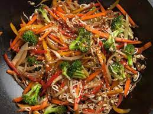

Ensalada salteada
Esta ensalada es muy buena porque es saludable y te da ganas de comer mas
Ingredientes
.jpg) zanahoria
brocoli
alberjas
salsas
cacahuetes
zanahoria
brocoli
alberjas
salsas
cacahuetes
instrucciones

1.Calienta el aderezo en una sartén antiadherente grande a fuego medio-alto. Agrega los vegetales, sofríelos 3 min. Agrega el pollo; sofríelo 5 min. o hasta que esté completamente cocido.
2.Agrega los cacahuates y la salsa de soya; sofríe esto durante 2 min. o hasta que los vegetales estén tiernos pero crujientes y la mezcla se caliente por completo.
3.Sirve la mezcla sobre la lechuga troceada.